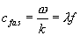
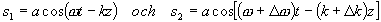
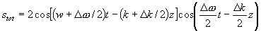
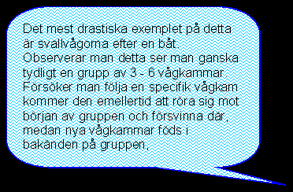
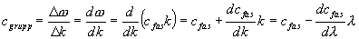

Våghastigheter
Vi har hittills diskuterat två hastigheter förknippade med en våg:
dels vågbergens hastighet, också kallad fashastighet

och partiklarnas hastighet i en mekanisk våg.
det finns ytterligare en som är av praktiskt intresse, och det är den hastighet med vilken en grupp av vågor (en puls skulle man kunna säga) rör sig. Denna brukar kallas grupphastighet och kan härledas genom att anta att vi har två vågor som skiljer sig åt lite grann i våglängd och frekvens, men har samma källa, amplitud och samma begynnelsefas.

Om dessa amplituder läggs ihop (utan medelvärdesbildning och kvadrering fås

Den första cosfaktorn beskriver den nya vågen som har fått medelfrekvensen mellan de andra vågorna.
Den andra cosfaktorn beskriver hur svävningen fortplantar sig. Denna (svävningen) är också en våg som rör sig med grupphastigheten (eftersom varje svävning är en grupp av vågor)
Vi får då:

Vi ser att grupphastighet och fashastighet är lika om fashastigheten inte beror av våglängden. Men vid alla tillfällen då vi har dispersion kommer grupp och fas att röra sig olika snabbt.
Fenomen blir emellertid viktigt även i t.ex. optiska fibrer där vågens hastighet beror av våglängden och alltså en ljuspuls rör sig med en annan hastighet än fashastigheten.
Till
nästa kapitel (Geometrisk optik)Till
innehållsförteckningen